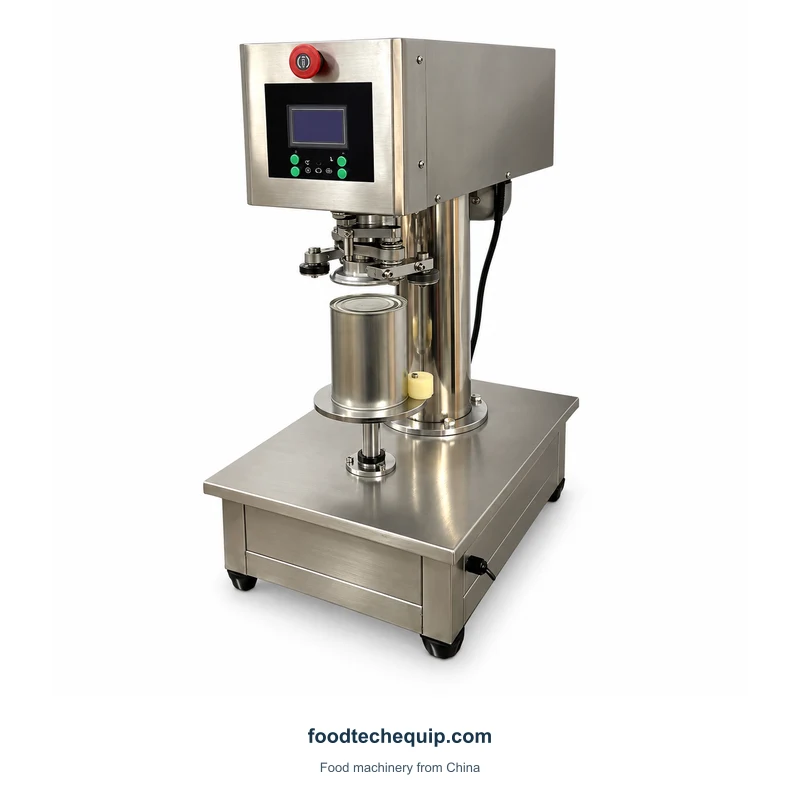
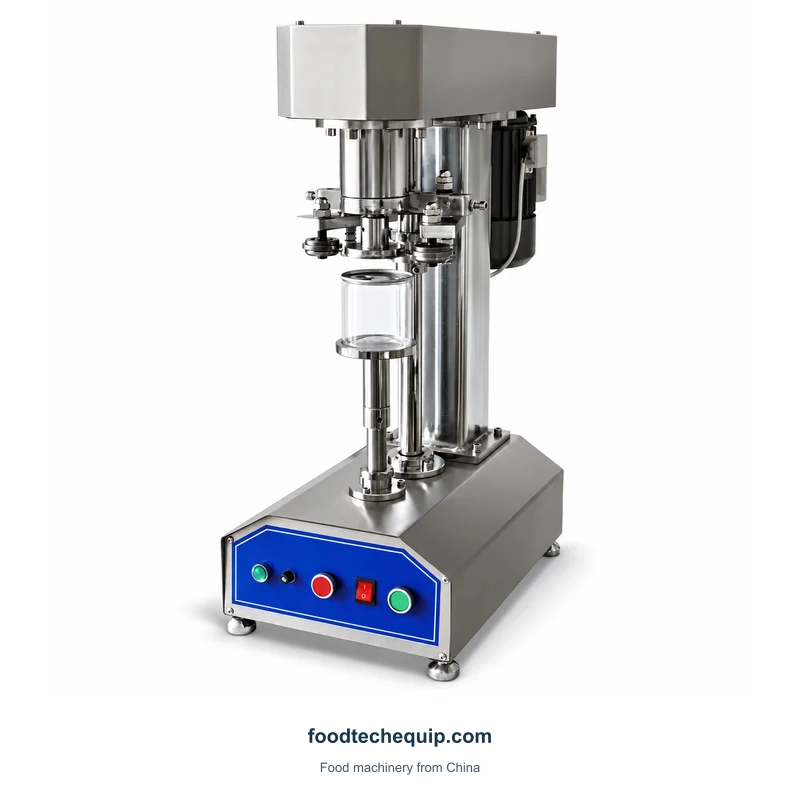
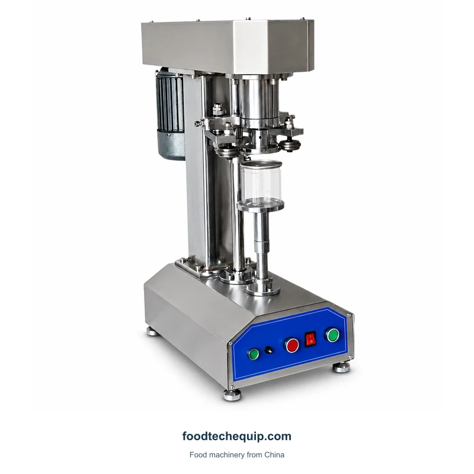
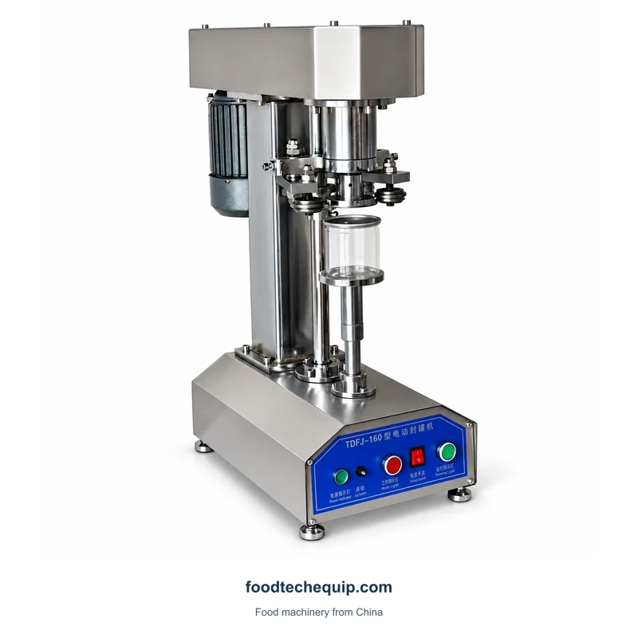

حدد الصورة لمشاهدتها بحجم أكبر.
قفل العلب
آلة مكتبية لقفل أغطية العلب
معدات مكتبية لقفل العلب، بتكوين 160.
- قطر العلبة المطبق160
- 40-100 mm
- ارتفاع العلبة القابل للتطبيق160
- 10-20 cm
اختيار المعدات · إرشادات التثبيت · الدعم عن بعد
استكشاف معلومات المنتج ↓تخطيط هذا الجهاز في سير عملك
أرسل أجسام وأطراف العلبة للتنسيق الدقيق الذي تنوي إغلاقه. تحقق من تخطيط المقعد والوصول إلى التحميل بالإضافة إلى أبعاد الحاوية.
مطابقة الحاويات ومعدات الإغلاق والختم ↗المنتجات والتغليف
المواصفات والتكوينات
| المعلمة | القيمة | الوحدة | التكوين |
|---|---|---|---|
| قطر العلبة المطبق | 40-100 | mm | 160 |
| ارتفاع العلبة القابل للتطبيق | 10-20 | cm | 160 |
مدى توافق هذه المهمة مع عمليتكم
استخدم نص العلبة ونهايتها المطابقة لتحديد مهمة الإغلاق. إذا كانت تعبئة المنتج أيضًا جزءًا من الاستفسار، فقم بوصف ذلك بشكل منفصل مع المادة والكمية وفتح الحاوية.
التطبيقات والأدلة العملية
أخبرنا عن متطلباتك.
- رسم تنسيق المورد
- ارتفاع العلبة وتسلسل التعامل معها
- متطلبات التماس وطريقة التقييم
- تكوين الاهتمام: 160
- الإخراج المطلوب بتنسيق الحزمة المقصود
- مصدر الطاقة المتاح والوجهة
استمر في الاستكشاف
عرض الفئة ↗المزيد من المعدات في هذه الفئة

قفل العلب
آلة كهربائية لقفل أغطية العلب
معدات ربط العلب الكهربائية مع دعامة رأسية وعناصر تحكم أمامية.
عرض المعدات
قفل العلب
آلة كهربائية لقفل أغطية العلب
آلة ربط العلب الكهربائية مع دعامة رأسية وعناصر تحكم أمامية. قارن التكوينات المتاحة لتنسيق العلبة الخاص بك.
عرض المعدات